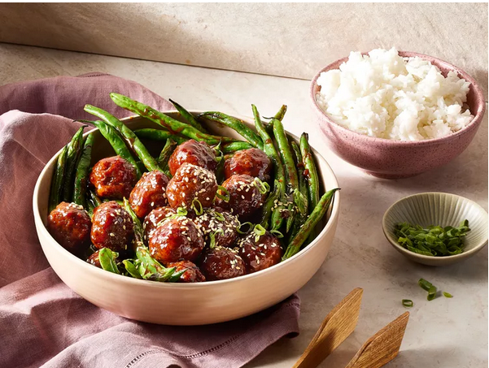

home
Hoisin-Glazed Meatballs

Description
These 30-minute hoisin-glazed meatballs are sweet, saucy, and simple
enough for a weeknight supper.
Ingredients
- 1 pound 80% lean ground beef
- 1/2 cup panko bread crumbs
- 1 large egg, lightly beaten
- 4 tablespoons less-sodium soy sauce, divided
- 3 cloves garlic, minced
- 1 1/2 teaspoons minced fresh ginger
- 1/2 cup hoisin sauce
- 2 tablespoons honey
- 1 green onion, minced
- 2 tablespoons rice vinegar
- 2 teaspoons toasted sesame oil
- 1 tablespoon vegetable oil
- 1 pound green beans, trimmed
- hot cooked white rice, for serving
- toasted sesame seeds and sliced green onion, for garnish
Steps
-
Preheat oven to 400 degrees F (200 degrees C). Grease a baking sheet.
-
Put ground beef, panko, egg, 1 tablespoon soy sauce, 2 cloves garlic,
and 1 teaspoon ginger in a bowl; stir until just combined (do not
overwork). Gently shape mixture into 11/2-inch balls. Arrange on
prepared baking sheet.
-
Bake 10 to 12 minutes or until an instant-read thermometer inserted into
centers of meatballs registers 160 degrees F (71 degrees C).
-
Meanwhile, stir together hoisin sauce, honey, green onion, vinegar,
sesame oil, and remaining 3 tablespoons soy sauce, 1 clove garlic, and
1/2 teaspoon ginger in a large saucepan. Cook over medium-low heat,
stirring occasionally, until slightly reduced, about 5 minutes. Reserve
2 tablespoons sauce in a small bowl for green beans. Add meatballs to
remaining sauce in saucepan; cook until flavors meld, about 2 minutes.
-
Meanwhile, heat vegetable oil in a large skillet over medium-high heat.
Add beans; cook, stirring occasionally, until tender and lightly
blistered, 4 to 5 minutes. Add reserved sauce to beans; stir to coat.
Serve meatballs with beans over rice. Garnish with sesame seeds and
green onion.